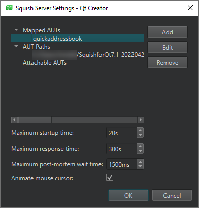
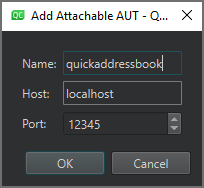

Select Squish AUTs
To select applications to test using Squish, go to Tools > Squish > Server Settings.

When running test suites or cases, the Squish Runner instructs the Squish Server to start the application under test (AUT). The server can be running on multiple computers, and the AUT can be located on a different path on each of them. Therefore, you must either map AUTs to their corresponding paths or specify AUT paths to search from in the server settings.
To test an already running application using a Squish Server running on another computer, attach to the application. You can attach only one server to your application at a time. The attached application is not closed when the test case is completed.
Map AUTs
To specify the path to an AUT to run, select Mapped AUTs > Add and locate the AUT.
The Squish server checks whether the name of the AUT to run is mapped to a path and starts the AUT using the mapped path. This way, it does not need to search from all the specified AUT paths.
Mapping AUTs prevents the server from accidentally executing the wrong AUT if two different executables have the same name, as the server executes the first matching AUT it finds in AUT Paths.
To change the path to the selected AUT, select Edit.
To remove the mapping to the selected AUT, select Remove.
Specify AUT paths
To specify a path to search AUTs from, select AUT Paths > Add.
The Squish Server searches for the executable to run from the specified AUT paths and runs the first one with the specified name that it finds in any path.
To change the selected AUT path, select Edit.
To remove the selected AUT path, select Remove.
Add attachable AUTs
To specify the path to a running AUT, select Attachable AUTs > Add. In the Add Attachable AUT dialog, specify a connection to a running application to register an attachable AUT.

To change the connection to the selected AUT, select Edit.
To remove the connection to the selected AUT, select Remove.
Specify settings for running tests
To specify settings for running tests:
- In Maximum startup time, set the maximum time to wait for the AUT to start before throwing an error.
- In Maximum response time, set the maximum time to wait for the AUT to respond before throwing an error.
- In Maximum post-mortem wait time, set the maximum time to wait after the main AUT has exited. This is useful for AUTs invoked through launcher applications, such as shell scripts or batch files.
- Select Animate mouse cursor to animate the mouse cursor when playing back a test.
See also Connect to Squish Server, Create Squish test suites, Enable and disable plugins, Manage Squish test suites and cases, and Squish.